Strategy Directory
A reference and research workspace for investigating strategy evidence and composing candidate portfolios.
About these slides. Screens captured from the working application. Figures are sample evidence for illustration; this is decision support, not investment advice or a performance claim.
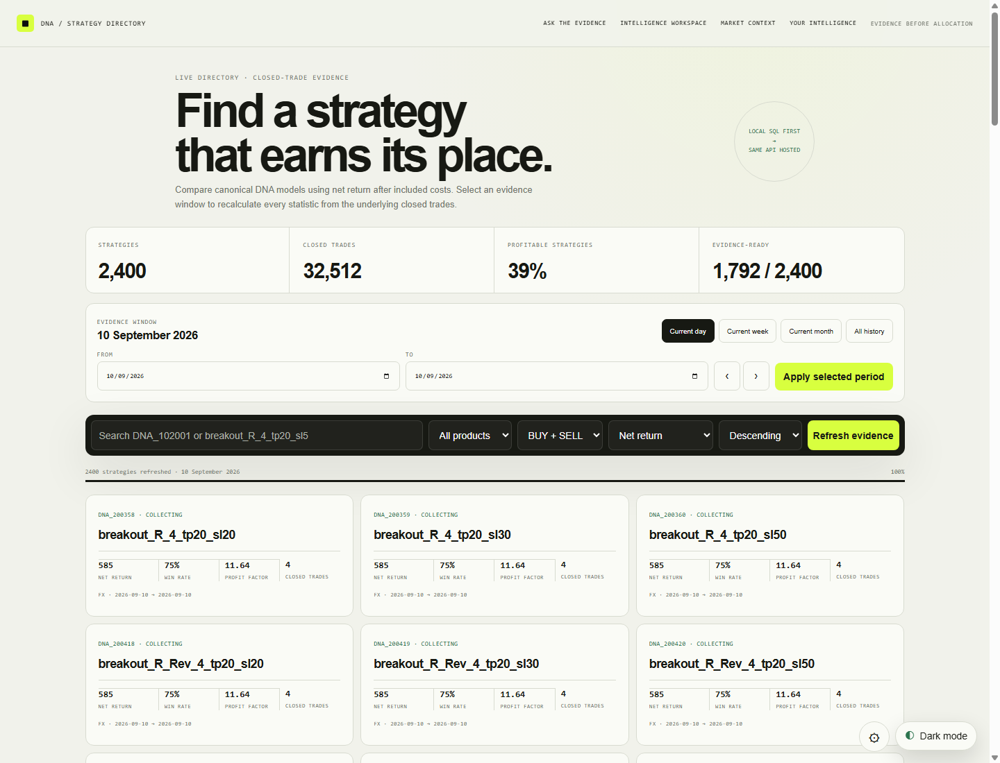
Directory overview
Search 2,400 strategies and recalculate every statistic from closed trades for the evidence window you choose: day, week, month or all history.
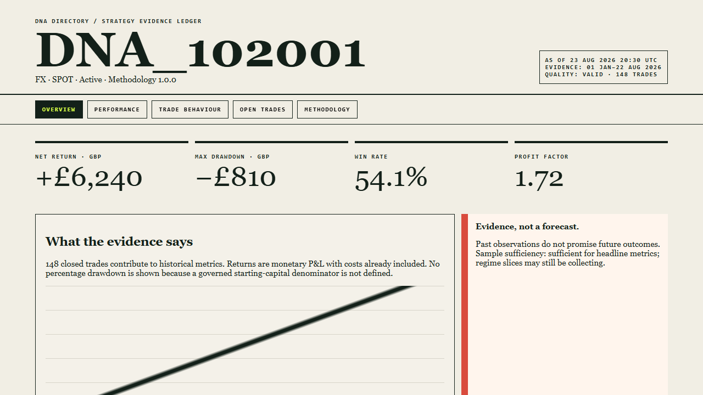
Strategy evidence ledger
Each strategy has one canonical record: net return, maximum drawdown, win rate and profit factor in GBP, with costs included and a clear note that past evidence is not a forecast.
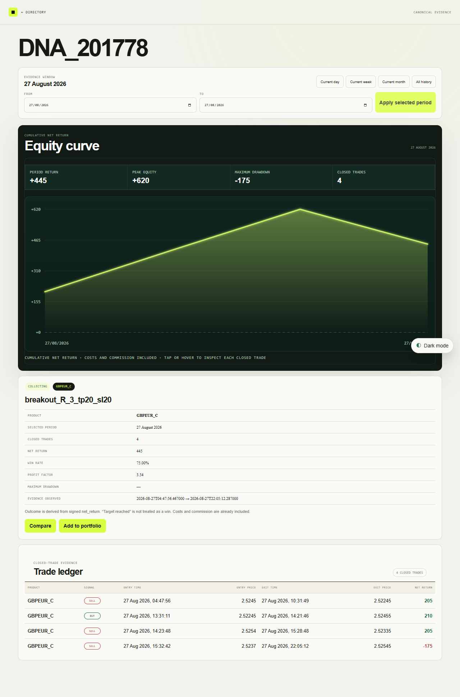
Equity curve and trade detail
The cumulative net-return curve sits above the strategy’s detail table, so every headline figure can be traced back to the closed trades behind it.
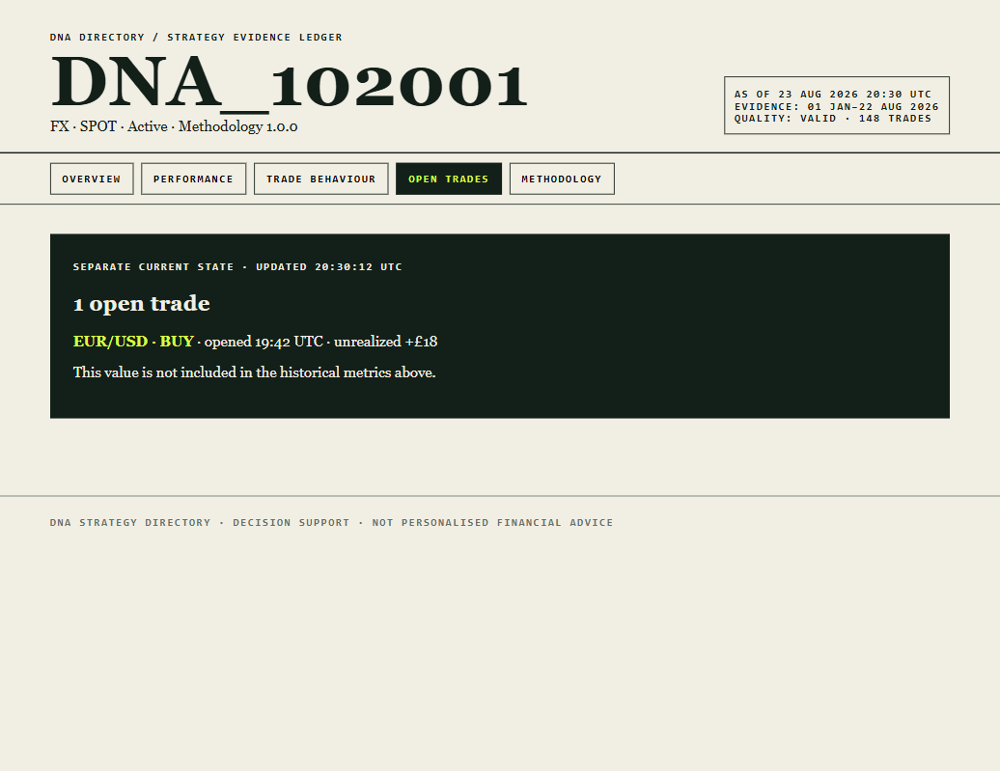
Open trades kept separate
Live positions are shown as a separate current state and are never mixed into the historical, closed-trade metrics.
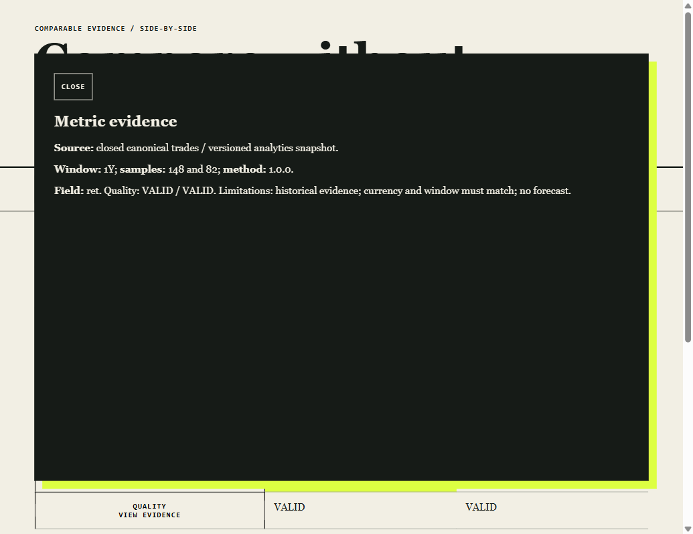
Evidence behind every metric
Open any figure to see its source, window, sample size, methodology version, quality state and stated limitations.
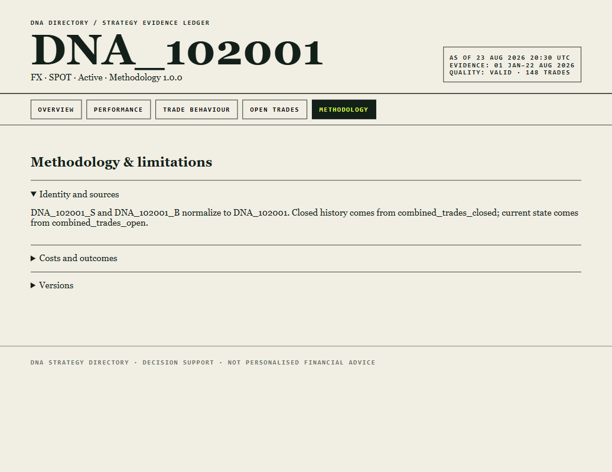
Methodology and limitations
Identity rules, data sources, cost treatment and versions are documented on the strategy itself, not hidden in a separate manual.
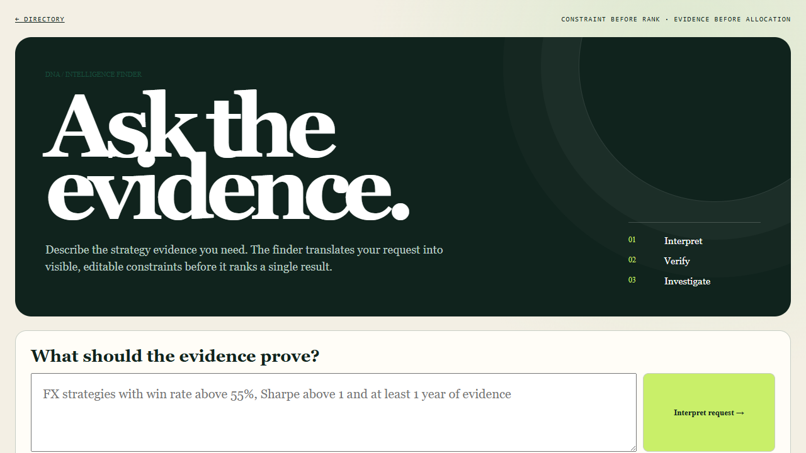
Ask the evidence
Describe what you need in plain English. The finder turns the request into visible, editable constraints before it ranks a single result.
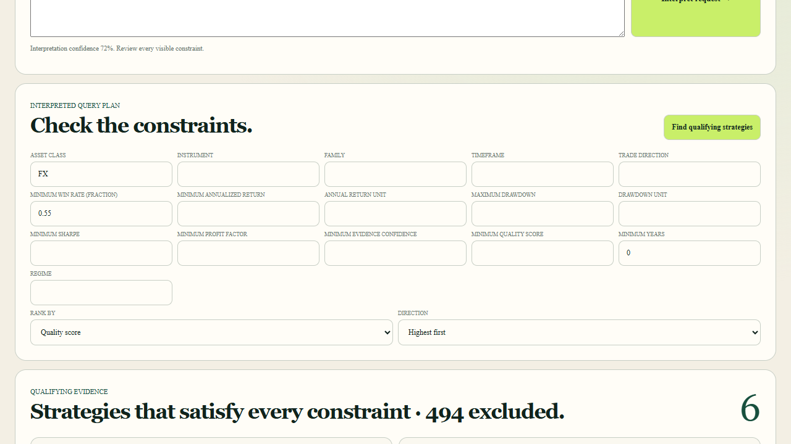
Constraints first, then results
The interpreted query plan is shown field by field. Here six strategies satisfy every constraint and 494 are excluded; ranking never overrides a hard constraint.
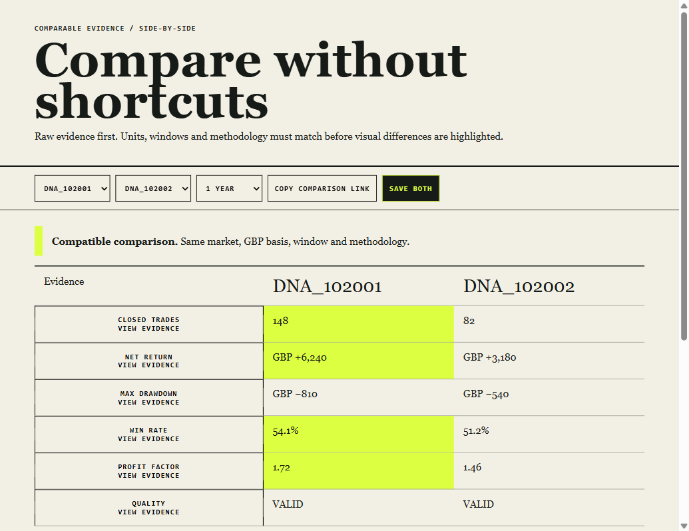
Compare without shortcuts
Strategies are compared side by side only when market, currency, window and methodology match, with each value linked to its evidence.
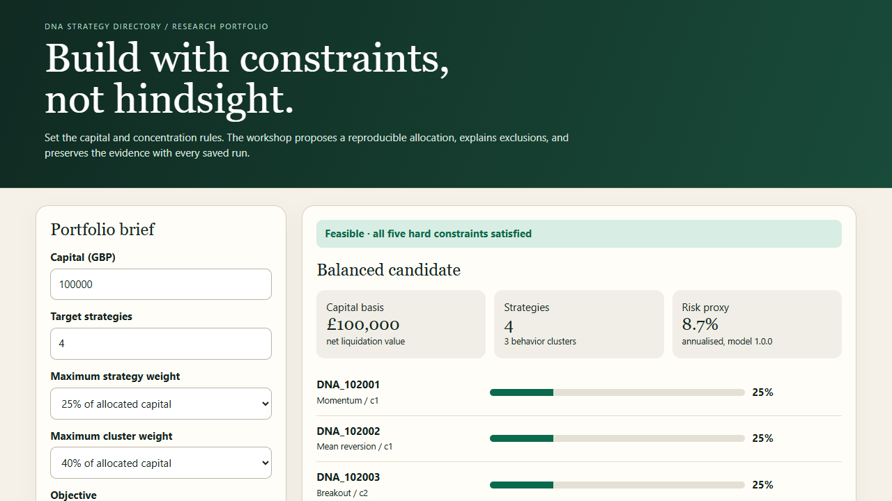
Build with constraints
Set capital, target strategy count and weight caps. The builder proposes a reproducible allocation across behaviour clusters and explains any exclusions.
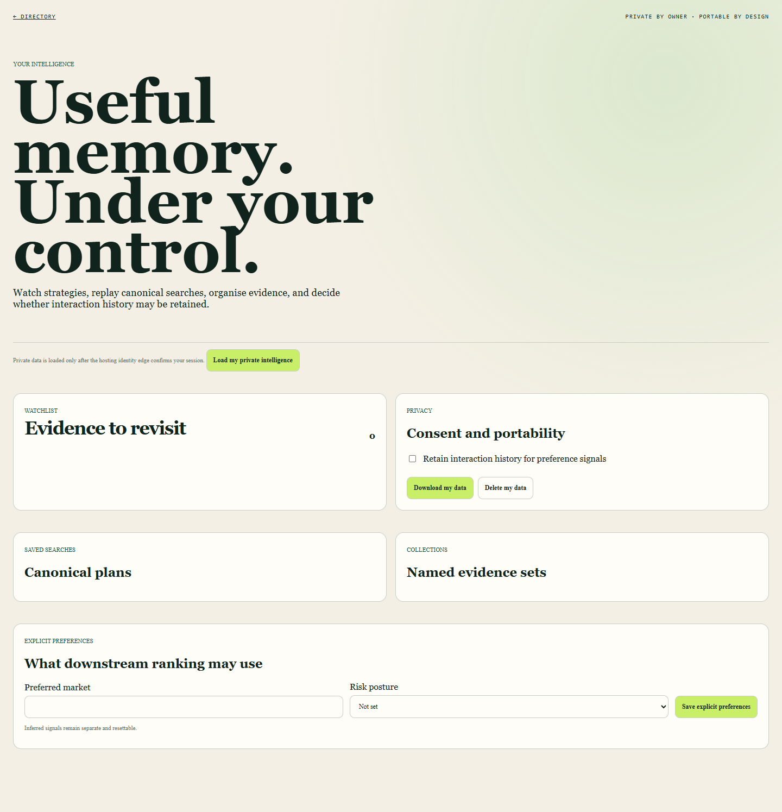
Your intelligence, under your control
Watchlists, saved searches and collections stay private to the owner, with consent controls and download or delete of personal data.